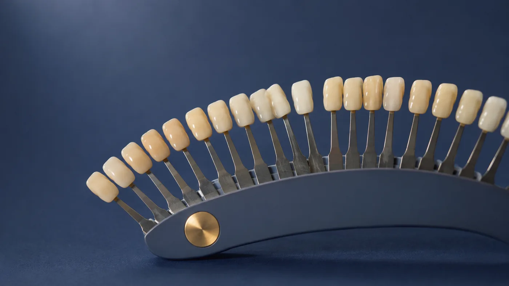
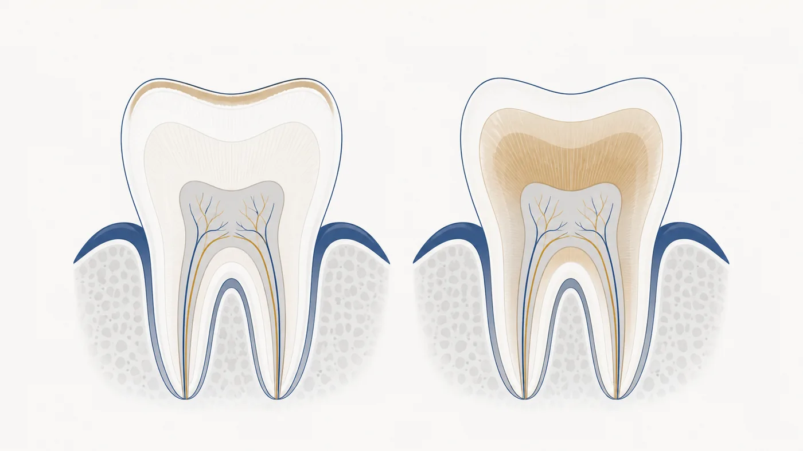
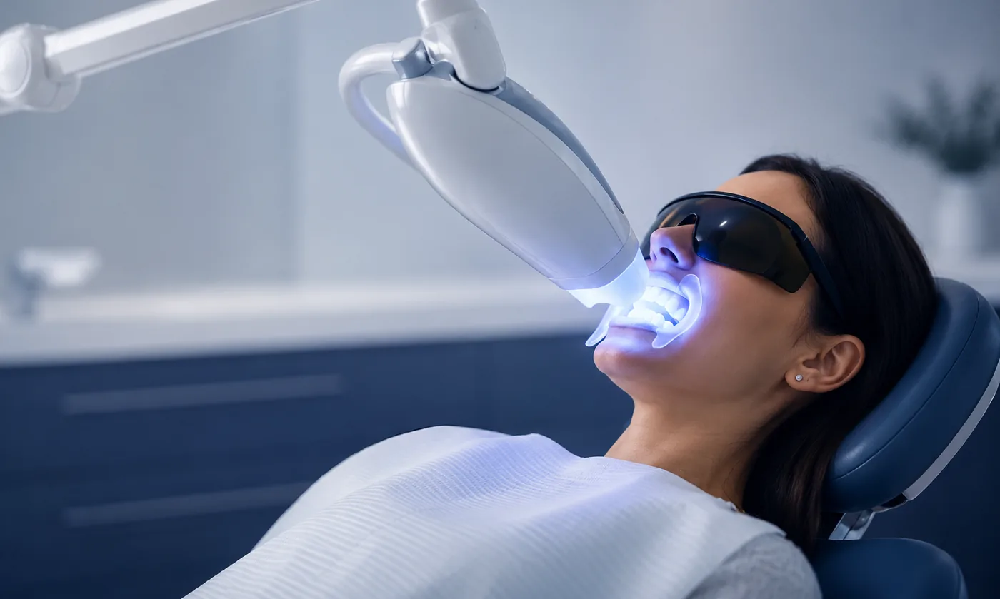

Was macht Zähne heller, und was nur sauber?
Viele Menschen hoffen, dass eine professionelle Zahnreinigung bereits hellere Zähne bringt. Manchmal ist der Unterschied deutlich zu sehen, manchmal verändert sich die Farbe kaum. Es kommt darauf an, ob die Verfärbungen auf den Zähnen liegen oder ob die natürliche Zahnfarbe selbst als zu dunkel empfunden wird.
Was kann eine professionelle Zahnreinigung, und was nicht?
Kaffee, Tee, Rotwein, Tabak und andere Farbstoffe lagern sich auf der Zahnoberfläche ab. Solche äußeren Verfärbungen lassen sich durch eine professionelle Reinigung und Politur häufig gut entfernen. Danach wirken die Zähne sauberer, glatter und oft auch heller. Sichtbar wird dabei aber die natürliche Zahnfarbe; die Zahnsubstanz selbst wird nicht aufgehellt.
Wer von Natur aus eher gelbliche Zähne hat, bekommt durch eine Zahnreinigung also gepflegte und glänzende, aber nicht automatisch hellere Zähne. Bei starken Belägen kann der Unterschied dagegen erstaunlich groß sein.
Was verändert ein Bleaching wirklich?
Beim Bleaching wird Wasserstoffperoxid eingesetzt oder ein Stoff, der es freisetzt. Der Wirkstoff dringt in Zahnschmelz und Dentin ein und verändert dort Strukturen, die für die Farbe mitverantwortlich sind. Eine Reinigung wirkt auf der Oberfläche, eine Aufhellung in der Zahnsubstanz.

Dass peroxidhaltige Mittel aufhellen, ist gut untersucht. Ein Cochrane-Review von 2018 hat dazu 71 Studien mit 3.780 Erwachsenen ausgewertet, alle zur Anwendung zu Hause. Die untersuchten Mittel hellten die Zähne über Zeiträume von zwei Wochen bis sechs Monaten auf. Die Autoren stufen die Sicherheit dieser Aussage allerdings als niedrig bis sehr niedrig ein, weil die Studien sehr unterschiedlich angelegt und meist klein waren (Eachempati et al. 2018).
Dieser Punkt wird häufig missverstanden, deshalb sagen wir es deutlich: Eine niedrige Sicherheit der Evidenz bedeutet nicht, dass eine Behandlung nicht wirkt. Sie bedeutet, dass sich aus den vorhandenen Studien nicht genau ableiten lässt, um wie viel sie wirkt und welches Produkt oder welche Konzentration am besten geeignet ist. Dass aufgehellt wird, zeigen die Studien übereinstimmend.
Behandlung in der Praxis oder Schienen für zu Hause?
Es gibt zwei zahnärztlich begleitete Wege. In der Praxis wird ein stark konzentriertes Mittel in einer Sitzung aufgetragen. Beim Schienenbleaching tragen Sie ein deutlich milderes Gel über einen festgelegten Zeitraum zu Hause in Schienen; die erste Anwendung und die Kontrollen erfolgen in der Praxis. Beide Wege lassen sich kombinieren.
Welcher Weg der bessere ist, lässt sich pauschal nicht sagen. Eine systematische Übersichtsarbeit mit Metaanalyse von 2025 hat beide verglichen. Auf der Farbskala, also bei dem, was Behandlerin und Patientin tatsächlich sehen, fand sich kein Unterschied. Ein Messgerät zeigte einen kleinen Vorteil für das Schienenbleaching, den die Autoren selbst als wenig gesichert einstufen. Empfindlichkeiten traten in beiden Gruppen ähnlich häufig auf, waren beim Schienenbleaching aber weniger stark ausgeprägt (de Geus et al. 2025).
Für Sie heißt das: Beide Wege führen zu einem sichtbaren Ergebnis. Welcher passt, hängt weniger von der Studienlage ab als davon, wie empfindlich Ihre Zähne sind, wie schnell Sie ein Ergebnis möchten und wie viel Zeit Sie einplanen können.
Wie wir in unserer Praxis arbeiten
Wir beginnen mit der Behandlung in der Praxis. Dabei verwenden wir ein Gel mit 32 Prozent Wasserstoffperoxid. Diese Konzentration liegt weit oberhalb dessen, was außerhalb einer Zahnarztpraxis überhaupt angewendet werden darf, und genau deshalb gehört sie hierher.
Der Ablauf stellt Anforderungen. Zahnfleisch und Schleimhaut werden sorgfältig abgedeckt, das Behandlungsfeld bleibt trocken, und der Verlauf wird durchgehend kontrolliert, damit wir bei Empfindlichkeiten sofort reagieren können. Wir arbeiten dabei mit einer Whitening-Lampe, die zum Behandlungssystem gehört. Aufgehellt wird durch das Gel. Für den Termin sollten Sie etwa anderthalb Stunden einplanen, in denen Sie ruhig sitzen bleiben.

Wenn Sie möchten, ergänzen wir das Ergebnis anschließend zu Hause. Welcher Weg dafür passt, richtet sich nach dem Befund.
In vielen Fällen genügen vorgefüllte Aufhellungsschienen mit 6 Prozent Wasserstoffperoxid. Das ist der gesetzliche Höchstwert für Mittel, die Patientinnen und Patienten mit nach Hause bekommen dürfen. Ein Abdruck ist dafür nicht nötig.
Wo eine genauere Anpassung sinnvoll ist, fertigen wir individuelle Schienen an und geben ein Gel mit Carbamidperoxid mit. Auch dieses bleibt unterhalb der gesetzlich zulässigen Grenze, denn Carbamidperoxid setzt Wasserstoffperoxid erst im Mund frei, und zwar in geringerer Menge, als die Prozentzahl auf der Packung vermuten lässt.
Die erste Anwendung findet in beiden Fällen bei uns statt. Viele nutzen diese Auffrischung etwa einmal im Jahr, um das Ergebnis länger zu erhalten. Notwendig ist sie nicht; sie ist ein Angebot, kein Pflichtbestandteil.
Was muss vor einer Aufhellung untersucht werden?
Ein Bleaching beginnt nicht mit dem Gel, sondern mit der Untersuchung.
Nicht jede dunklere Stelle ist ein rein ästhetisches Problem. Karies, undichte Füllungen, freiliegende Zahnhälse, Risse oder ein abgestorbener Zahn erfordern eine andere Behandlung.
Auch Kronen, Verblendungen und Füllungen sind zu berücksichtigen. Diese Materialien hellen nicht in derselben Weise auf wie natürliche Zähne. Liegen sie im sichtbaren Bereich, kann danach ein Farbunterschied deutlicher auffallen.
Ebenso wichtig ist, ob die Zähne gleichmäßig verfärbt sind. Eine Aufhellung gleicht Farbunterschiede nicht aus, sondern hellt auf, was vorhanden ist. Sind einzelne Bereiche unterschiedlich dunkel, reagieren sie nicht gleich stark, und der Unterschied kann danach sogar auffälliger wirken. Das ist eine Beobachtung aus unserem Praxisalltag und kein Ergebnis der hier genannten Studien. In solchen Fällen ist eine Aufhellung nicht der richtige Weg; dann sprechen wir über andere Möglichkeiten wie Verblendungen oder Kronen.
Deshalb klären wir vorher nicht nur den Zustand von Zähnen und Zahnfleisch, sondern auch, was Sie stört und welches Ergebnis realistisch ist.
Warum sieht das Ergebnis direkt nach der Behandlung anders aus?
Während der Behandlung trocknen die Zähne vorübergehend aus. Trockener Zahnschmelz ist weniger durchsichtig und wirkt dadurch besonders hell. In einer randomisierten Untersuchung genügten zehn Minuten Trockenlegung für eine messbare Aufhellung, und eine halbe Stunde später war die Ausgangsfarbe noch nicht wieder erreicht (Burki et al. 2013).
Ein Teil dessen, was Sie unmittelbar nach der Behandlung im Spiegel sehen, entsteht also durch diese Austrocknung. Das heißt nicht, dass die Aufhellung nicht gewirkt hat. Es heißt nur, dass der erste Blick noch nicht das endgültige Ergebnis zeigt. In den folgenden Tagen nehmen die Zähne wieder Feuchtigkeit auf und die Farbe stabilisiert sich. Wir beurteilen das Ergebnis deshalb erst beim nächsten Termin.
Wie lange hält die Aufhellung?
Das ist verschieden. Eine Rolle spielen die natürliche Ausgangsfarbe, die Ursache der Verfärbung, Rauchen sowie Kaffee- und Teekonsum, die Mundhygiene und das verwendete Verfahren.
Eine Übersichtsarbeit von 2023 hat 24 Studien zum Schienenbleaching ausgewertet. Die meisten berichten, dass die Farbe zwischen einem und zweieinhalb Jahren stabil bleibt, unabhängig vom verwendeten Mittel und von der Anwendungsform. Bei sehr starken Ausgangsverfärbungen kehrt die dunklere Farbe häufiger zurück (Fioresta et al. 2023).
In unserer Praxis beobachten wir bei sorgfältig ausgewählten Patientinnen und Patienten und guter häuslicher Pflege lange anhaltende Ergebnisse. Eine Garantie lässt sich daraus nicht ableiten. Lässt die Aufhellung nach, kann sie mit den deutlich milderen Mitteln in Schienen aufgefrischt werden.
Was ist von Whitening-Zahnpasten, Aktivkohle und Backpulver zu halten?
Whitening-Zahnpasten können äußere Verfärbungen vermindern, weil sie die Oberfläche stärker reinigen. Das ist in einer systematischen Übersichtsarbeit mit Metaanalyse gut belegt (Soeteman et al. 2018). Die natürliche Zahnfarbe verändern sie nicht.
Zu Aktivkohle liegt eine Übersichtsarbeit vor, die sich auf Laboruntersuchungen stützt, also auf Versuche außerhalb des Mundes und an gezogenen Zähnen, nicht auf Behandlungen an Patientinnen und Patienten. Die Ergebnisse zur Aufhellung waren uneinheitlich, und die untersuchten Kohleprodukte rieben die Zahnoberfläche vergleichsweise stark ab. Die Autoren stufen das Verzerrungsrisiko der elf eingeschlossenen Studien selbst als mittel bis hoch ein (Montero Tomás et al. 2023).
Beim Backpulver wird häufig etwas verwechselt. Untersucht wurden Zahnpasten mit Natriumhydrogencarbonat, die äußere Verfärbungen entfernen können. Daraus folgt nicht, dass Putzen mit Backpulver aus der Küche sicher oder empfehlenswert ist. Das eine ist ein abgestimmtes Produkt, das andere ein Hausmittel ohne Kontrolle der Korngröße.
Warum gehören stärkere Aufhellungsmittel in zahnärztliche Hände?
Produkte mit höchstens 0,1 Prozent Wasserstoffperoxid sind frei verkäuflich.
Bei Zahnaufhellungsmitteln mit mehr als 0,1 und bis zu 6 Prozent muss eine Zahnärztin oder ein Zahnarzt einbezogen sein. Die erste Anwendung eines Behandlungszyklus erfolgt in der Praxis oder unter direkter zahnärztlicher Aufsicht; danach darf das Mittel für den restlichen Zyklus mitgegeben werden. Bei Personen unter 18 Jahren dürfen diese Produkte nicht angewendet werden.
Höher konzentrierte Präparate wie das von uns verwendete Gel sind keine kosmetischen Mittel mehr. Für sie gelten andere Voraussetzungen, und sie gehören vollständig in die Zahnarztpraxis.
Vorübergehend empfindliche Zähne oder Reizungen des Zahnfleisches können auftreten. Die vorliegenden Studien beschreiben diese Beschwerden überwiegend als mild und vorübergehend; meist gehen sie nach dem Ende oder einer Unterbrechung der Behandlung zurück. Ausschließen lassen sie sich nicht.
Ablauf, Voraussetzungen, Kosten und die Pflege nach der Behandlung haben wir ausführlich im Infoportal zusammengestellt und halten sie dort aktuell.
Zahnaufhellung im InfoportalQuellen anzeigen
Manche möchten Beläge und oberflächliche Verfärbungen loswerden. Andere stört ihre natürliche Zahnfarbe. Und manchmal liegt die Ursache an einer einzelnen Stelle, die eine ganz andere Behandlung braucht. Sagen Sie uns deshalb am besten nicht nur, welche Behandlung Sie sich vorstellen, sondern was Sie an Ihren Zähnen stört. Den Rest klären wir gemeinsam. Dieser Beitrag informiert allgemein und ersetzt weder die Untersuchung noch das persönliche Gespräch.

Ablauf, Empfehlungen und Kosten, ausführlich im Infoportal.
Zur PZR im InfoportalVoraussetzungen, Ablauf, Kosten und die Pflege danach.
Zur Zahnaufhellung im InfoportalAlle Praxisnachrichten, Urlaubs- und Vertretungszeiten sowie ausführliche Informationen zu Behandlungen und Vorsorge, ständig gepflegt und in mehreren Sprachen.
Sprechzeiten
Außerhalb der Sprechzeiten: zahnärztlicher Notdienst 01801 116 116
Kontakt
Sie möchten einen Termin vereinbaren oder uns etwas mitteilen? Nutzen Sie ganz einfach unser Kontaktformular, oder noch einfacher: buchen Sie direkt online.